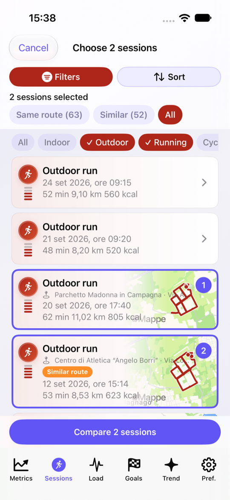
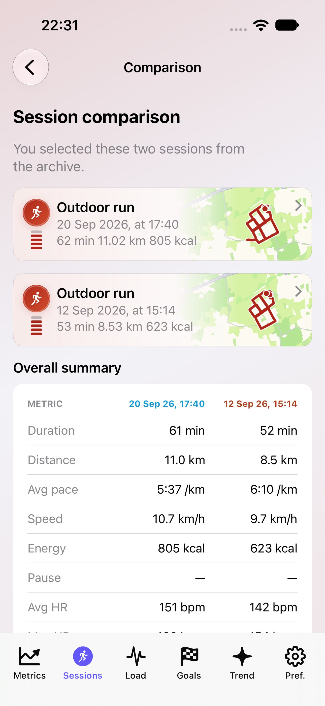
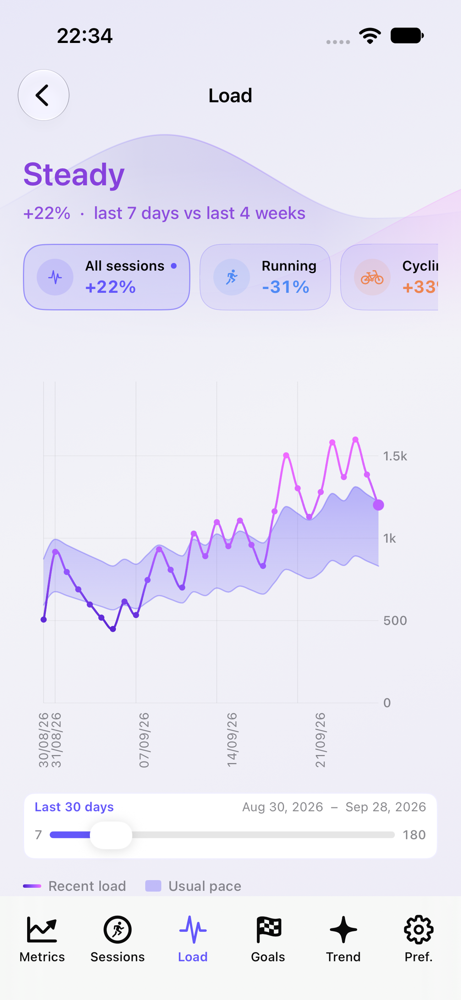
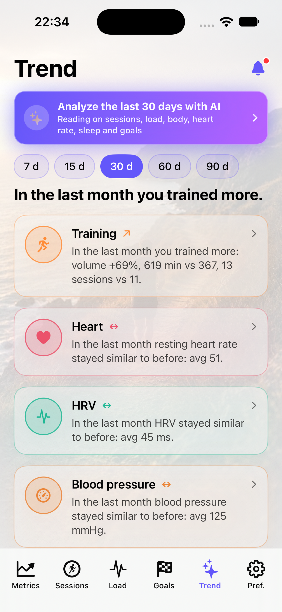
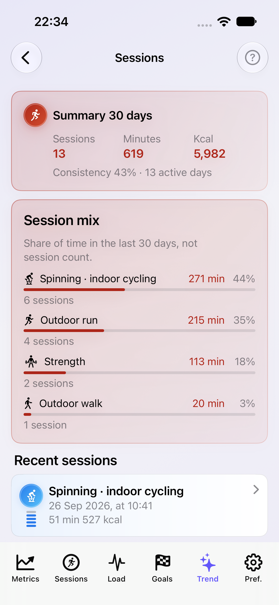

Trends & analysis
15–90 day windows on activity, cardio, sleep and composition — in plain language.
iOS · Apple Health · HealthKit
LifeNex
Turn the data already in Apple Health into clear trends: workouts, training load, body composition and goals — without diagnosis or clinical plans.
It observes your data, explains trends, and motivates you toward goals you choose.
15–90 day windows on activity, cardio, sleep and composition — in plain language.
Workout history, heart-rate zones, maps and how your training load evolves.
Smart readings only with consent, based on summaries already computed on your iPhone.
Eight key screens: what you see and what you can do.





LifeNex observes, explains, and motivates. Not a medical app.
Go to the App Store